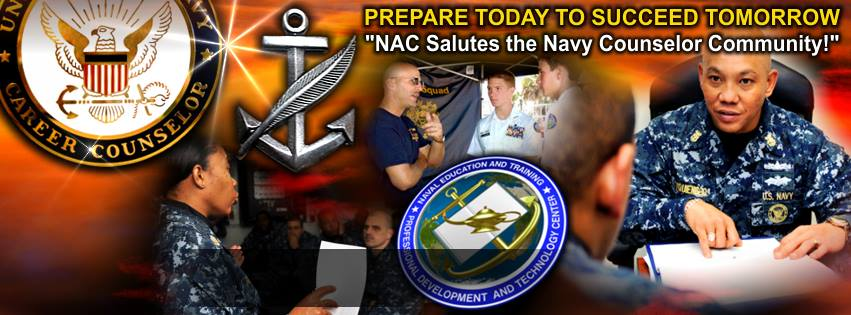

Aviation Ordnanceman Rating
(March 2, 1926-Present)
The Navy's Aviation Ordnance rating really began on April 9, 1915 when a Chief Gunners Mate and a Chief Turret Captain, along with several other mechanics, were sent to Pensacola, Florida to work on what would be the beginning of aircraft armament and ordnance systems.
The Navy accepted its first aircraft, a Curtiss Triad (Hydroplane), on August 9, 1911. Early bombing tests were held in January and February of 1913, at Guantanamo Bay, Cuba, and in July 1914 at Indian Head, Maryland. Twenty-two months later, in May 1916, the development of a gyroscopic bomb-sight was initiated. On April 6, 1917, at which time the United States entered into World War One, the inventory of the fledging air arm consisted of the following: 45 seaplanes, six flying boats, three land planes, and one airship. By September, 1917 two types of bombs were in service with a third type coming into production, weighing 163, 270, and 216 pounds respectively. Successful tests of machine guns were conducted between January and May, 1918 at Pensacola, Florida.
In March of 1918, the Aviation Ordnance (AVORD) sub-section in the Bureau of Ordnance, became a separate unit. Previously it served as a division of the Surface Gun Mount section, dating back to the early months of the war. As a separate group, they were given cognizance over the procurement and technical aspects of machine guns, including mounts, sights, fittings and ammunition. Other aviation ordnance items falling within AVORD cognizance in 1918 were larger caliber guns, bombs, bomb racks, bomb sights, pyrotechnic signaling devices, air launched torpedoes, aircraft torpedo launching equipment, and training devices which include miniature practice bombs.
The Aviation Ordnanceman rating was established at all four petty officer grades of Chief, First, Second and Third Class on March 2, 1926 as a rating within the Aviation Branch. The Aviation Ordnanceman rating was filled initially from qualified personnel serving primarily with the ratings of Gunner's Mate and Torpedoman (assigned to aviation). The Aviation Ordnanceman specialty mark, a winged flaming spherical shell, was incorporated into Uniform Regulations in January 1927.


Weapons Divisions


Weapons Department Overall Mission
Weapons Department consists of over 300 Sailors in such ratings as Aviation Ordnancemen, Gunner’s Mate, Enginemen, Machinist’s Mate, Electrician’s Mate, Aviation Maintenance Administration-men and Yeomen, who are responsible for providing ordnance and support to embarked squadrons, embarked SEAL teams, and Explosive Ordnance Disposal Detachments, as well as providing an armed Ship’s Self-Defense Force.
PCU GERALD R. FORD
While operating as a Precommissioning Unit the outstanding Sailors that are assigned to Weapons Department are responsible for (eval blurb) While operating as a Precommissioning Unit the outstanding Sailors that are assigned to Weapons Department are responsible for (eval blurb) While operating as a Precommissioning Unit the outstanding Sailors that are assigned to Weapons Department are responsible for (eval blurb)


Sailors Corner
Sailors Corner serves as the critical link between individual Sailors, the Command Career Conselor (CCC), his or her command, and supporting Navy organizations, including Navy Personnel Command (NPC). On behalf of the Commanding Officer, the CCC is responsible for managing the Navy Enlisted Retention and Career Development Program within his or her command. Assigned to a position of great trust, the CCC reports directly to the Executive Officer via the Command Master Chief, Chief of the Boat, or Senior Enlisted Leader.
